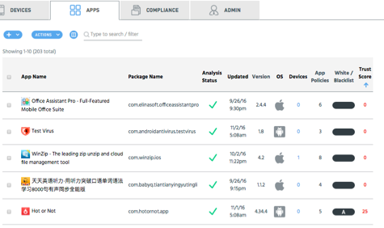
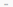

Use the main section of the page to view information about your apps. This information can help you identify and act on any potential issues.
The number (count) of results matching your selections from App Policies, Threat Lists, and Filters displays at the top of the main section. Apps are grouped by package name; all versions of an app for a specific platform are displayed in a group. Click the + to expand and see all items in the list.
Use the Analysis Status filter to see the state of your app analysis.

| Column | Description |
|---|---|
| checkbox | Tick or untick the checkbox in the column header to select or deselect all apps. Tick one or more checkboxes for individual apps to select them. |
| App Name | The name of the app, with corresponding icon where available. Click to view app details. |
| Package Name | The name of the package used to install the app |
| Analysis Status* (click for details) |
- Analysis completed successfully
- Analysis in process - Analysis failed |
| Updated | Date the app was last updated |
| Version | The version of the app installed |
| OS | The operating system on which the app is installed |
| Devices | Number of devices on which the app is installed. Click to view a list of devices affected, and to view noncompliant apps on the device(s). |
| App Policies | Number of app policies that apply to the app |
| White/Blacklist |
- app is blacklisted; if auto-blacklist is on for the app, appears with an A - app is whitelisted; if auto-whitelist is on for the app, appears with an A  - app is neither whitelisted or blacklisted- the app cannot be whitelisted or blacklisted |
| Trust Score |
Assessed score for the app Red - 0 to 30 Orange - 31 to 70 Green - 71 to 100 |